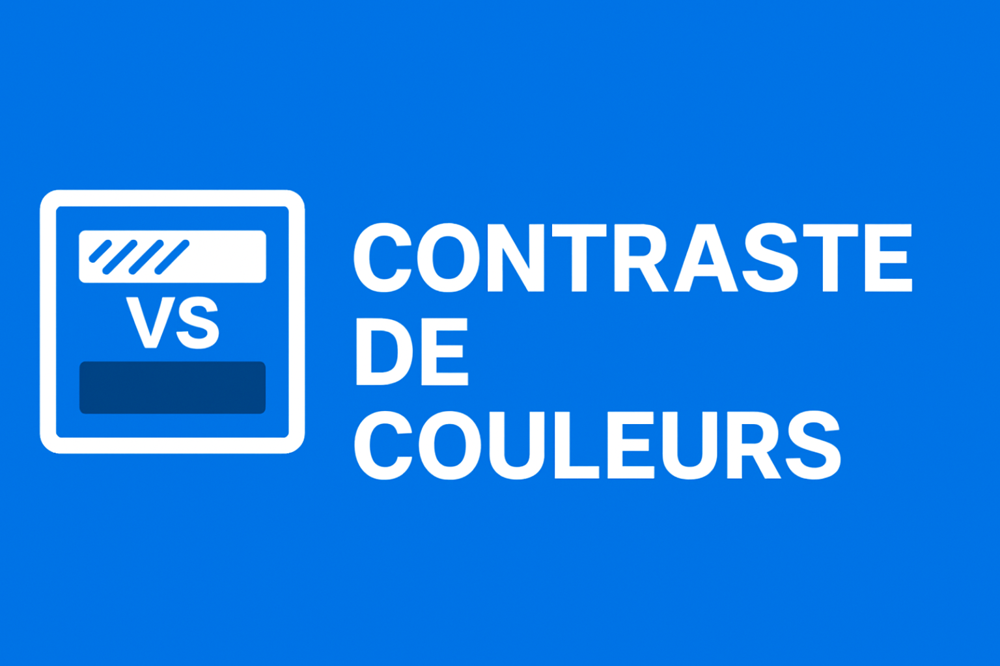
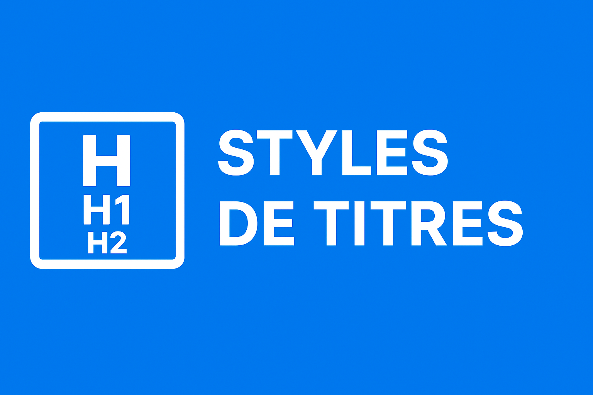
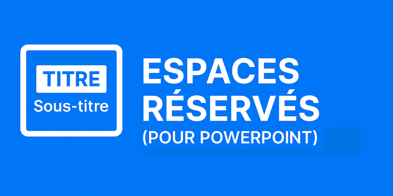

Carrefour vidéo 2026
Regardez de courtes vidéos pratiques portant sur divers sujets liés à l’accessibilité, allant des bases du texte alternatif aux tests de navigation au clavier, avec des tutoriels étape par étape.
Vidéo en vedette : Vidéo pédagogique sur le texte alternatif
Vidéo pédagogique sur la rédaction d'un texte alternatif efficace pour les images. Hébergée sur Microsoft Stream (SharePoint); connexion à l'intranet du GC requise.
Vidéos récentes

Vidéo pédagogique sur le contraste des couleurs
Apprenez à appliquer un contraste de couleur approprié pour que le texte et les éléments visuels respectent les normes d'accessibilité.
Pédagogique
Vidéo pédagogique sur les styles en têtes
Découvrez comment utiliser correctement les styles en têtes pour créer des documents et des présentations bien structurés et accessibles.
Pédagogique
Vidéo pédagogique sur les espaces réservés et les mises en page
Apprenez à utiliser les espaces réservés et les mises en page dans les présentations pour améliorer la structure et l'accessibilité.
PédagogiqueAnnées précédentes
Parcourez les enregistrements vidéo des années précédentes :
- 2025 : Voir les vidéos de 2025
- Archivées : Toutes les vidéos archivées